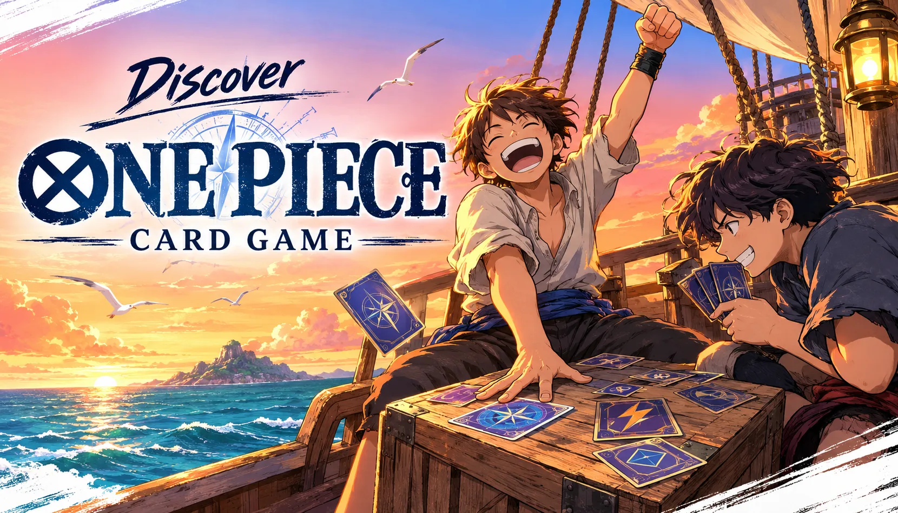
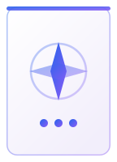
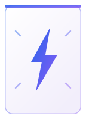
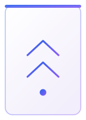
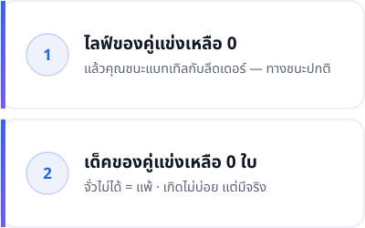
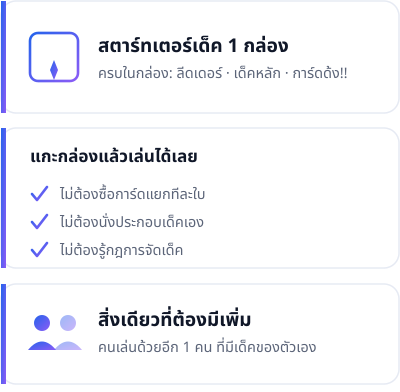
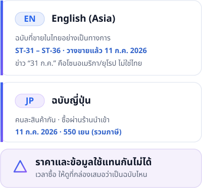

คู่มือมือใหม่
One Piece Card Game คืออะไร เล่นยังไง (ฉบับมือใหม่ที่ไม่เคยเล่นมาก่อนเลย)
สารบัญ
ถ้าคุณเคยเดินผ่านร้านการ์ด เห็นคนนั่งเล่นการ์ดวันพีชกันอยู่ แล้วสงสัยว่า "ไอ้นี่มันเล่นยังไง" — บทความนี้เขียนมาเพื่อคุณ เราจะไม่ถือว่าคุณรู้อะไรมาก่อนเลยสักอย่าง
ตอบสั้น ๆ ก่อน: One Piece Card Game คือการ์ดเกมที่คุณเล่นกับ คู่แข่งหนึ่งคน แต่ละฝ่ายมี การ์ดลีดเดอร์ 1 ใบ เป็นตัวแทนของตัวเอง และมีเด็คการ์ดของตัวเอง จากนั้นผลัดกันเล่นคนละเทิร์น เพื่อโจมตีจนกว่า "ไลฟ์" ของลีดเดอร์ฝ่ายตรงข้ามจะเหลือ 0 แล้วชนะการแบทเทิลกับลีดเดอร์ใบนั้น
และถ้าอยากเริ่มเล่นจริง ๆ: ซื้อ สตาร์ทเตอร์เด็ค หนึ่งกล่อง แค่นั้นพอ — เว็บไซต์ทางการของ Bandai บอกไว้เองว่าสตาร์ทเตอร์เด็คคือ "เด็คที่มีทุกอย่างที่คุณต้องการในการเริ่มเล่น ONE PIECE CARD GAME" คุณไม่ต้องซื้อการ์ดแยก ไม่ต้องประกอบเด็คเอง แกะกล่องแล้วเล่นได้เลย
ที่เหลือของบทความนี้คือการขยายความสองย่อหน้าข้างบน อ่านถึงตรงไหนแล้วรู้สึกว่าพอแล้ว ก็หยุดได้เลย ไม่ต้องอ่านจนจบ
บอกไว้ตรง ๆ ตั้งแต่ต้น: บทความนี้จะพาคุณเข้าใจ ภาพรวมและโครงสร้างของเกม — เล่นยังไง เทิร์นหนึ่งเกิดอะไรขึ้น ชนะยังไง เริ่มต้นต้องซื้ออะไร แต่เราจะ ยังไม่ลงรายละเอียดกติกาการต่อสู้ (เช่น การบล็อก การเคาน์เตอร์) เพราะเรายังยืนยันจากแหล่งทางการไม่ได้ในตอนนี้ เหตุผลอยู่ในหัวข้อ "กติกาการต่อสู้แบบละเอียด" ด้านล่าง เราคิดว่าบอกคุณตรง ๆ ดีกว่าเดาให้คุณฟัง
สรุปใน 30 วินาที
ถ้าคุณอ่านแค่ส่วนนี้ส่วนเดียวแล้วปิดไป ก็ยังถือว่าเข้าใจเกมนี้แล้ว
- เล่นกัน สองฝ่าย — คุณกับคู่แข่ง
- แต่ละฝ่ายมี การ์ดลีดเดอร์ 1 ใบ (ตัวละครหลักของคุณ) เด็คหลัก 50 ใบ และ เด็คด้ง!! อีก 10 ใบ
- ด้ง!! (DON!!) คือทรัพยากรของเกม เอาไว้จ่ายค่าลงการ์ด — เทิร์นหนึ่งได้เพิ่ม 2 ใบ
- คุณลง การ์ดคาแรกเตอร์ ลงสนาม แล้วใช้ลีดเดอร์กับคาแรกเตอร์ โจมตี ฝ่ายตรงข้าม
- ชนะเมื่อ ไลฟ์ของลีดเดอร์คู่แข่งเหลือ 0 ใบ แล้วคุณชนะการแบทเทิลกับลีดเดอร์ (หรือเด็คของคู่แข่งหมดก่อน)
- อยากเริ่ม: ซื้อสตาร์ทเตอร์เด็ค 1 กล่อง จบ
One Piece Card Game คืออะไร
เป็นการ์ดเกมของ Bandai ที่ใช้ตัวละครจากเรื่อง One Piece คุณกับคู่แข่งผลัดกันเล่นทีละเทิร์น แต่ละฝ่ายเลือก "ลีดเดอร์" ของตัวเองมาหนึ่งใบ — ลูฟี่ โซโล คุซัง ใครก็ได้ — แล้วสร้างเด็คขึ้นมารอบ ๆ ลีดเดอร์ใบนั้น
เว็บไซต์ทางการอธิบายบทบาทของลีดเดอร์ไว้ว่า "ลีดเดอร์ของคุณจะเป็นตัวกำหนดทิศทางการเล่นของเด็ค" พูดง่าย ๆ คือ ลีดเดอร์ไม่ได้เป็นแค่การ์ดใบหนึ่ง แต่เป็นตัวตัดสินว่าเด็คทั้งเด็คของคุณจะหน้าตาเป็นแบบไหน
ลีดเดอร์แต่ละใบมี สี ของตัวเอง และกติกาบังคับว่า เด็คของคุณต้องเป็นสีเดียวกับลีดเดอร์ ดังนั้นเวลาคนเล่นเกมนี้พูดว่า "เล่นสีแดง" หรือ "เล่นสีน้ำเงิน" เขากำลังพูดถึงเรื่องนี้
การ์ด 5 ประเภทที่คุณจะเจอ

ลีดเดอร์Leader1 ใบต่อเด็ค · มีไลฟ์ของตัวเอง · โจมตีได้- คาแรกเตอร์Characterลงสนามได้สูงสุด 5 ใบพร้อมกัน · โจมตีได้

อีเวนต์Eventใช้จากมือ เกิดผล 1 ครั้ง แล้วจบไป- สเตจStageอยู่บนสนามได้ทีละ 1 ใบเท่านั้น

ด้ง!!DON!!ทรัพยากรของเกม · +2 ใบต่อเทิร์น · สูงสุด 10 ใบ
เกมนี้มีการ์ดอยู่ 5 ประเภท แค่นี้จริง ๆ เราจะใช้ คำที่เว็บไซต์ทางการภาษาไทยของ Bandai ใช้จริง เพื่อที่เวลาคุณไปอ่านเว็บทางการหรือคุยกับคนที่ร้าน จะได้เป็นคำเดียวกัน
การ์ดลีดเดอร์ (Leader)
ตัวแทนของคุณในเกม มีใบเดียวต่อหนึ่งเด็ค วางไว้บนสนามตั้งแต่เริ่มเกม ไม่ต้องจ่ายอะไรเพื่อลงมัน ลีดเดอร์มี ไลฟ์ ของตัวเอง โจมตีได้ และมีความสามารถของตัวเอง
การ์ดคาแรกเตอร์ (Character)
ตัวละครที่คุณลงมาสู้ให้คุณ เว็บทางการบอกว่า "คาแรกเตอร์จะมีพลังและความสามารถของตัวเอง" และคาแรกเตอร์สามารถ โจมตีลีดเดอร์หรือคาแรกเตอร์ของคู่แข่งได้
คุณมีคาแรกเตอร์อยู่บนสนามได้ สูงสุด 5 ใบ พร้อมกัน
การ์ดอีเวนต์ (Event)
การ์ดใช้ครั้งเดียวทิ้ง เว็บทางการบอกว่า "การ์ดอีเวนต์จะแสดงผลความสามารถ 1 ครั้ง" — ใช้จากมือ เกิดผล แล้วก็จบไป
การ์ดสเตจ (Stage)
การ์ดสนับสนุนที่วางไว้บนสนาม มีได้ทีละใบเดียวเท่านั้น ตามที่เว็บทางการระบุว่า "บนสนามจะมีสเตจได้เพียงใบเดียวเท่านั้น"
การ์ดด้ง!! (DON!!)
นี่คือหัวใจของเกม และเป็นคำที่มือใหม่งงที่สุด — "ด้ง!!" คือคำที่เว็บไซต์ทางการภาษาไทยใช้เรียกการ์ด DON!!
คิดง่าย ๆ ว่ามันคือ เงิน หรือ พลังงาน ของเกมนี้ เว็บทางการอธิบายว่า "ด้ง!! จะถูกใช้ในการจ่ายคอสต์ต่างๆ หรือติดให้กับลีดเดอร์หรือคาแรกเตอร์เพื่อเพิ่มพลังได้"
แปลว่าด้ง!! ทำได้สองอย่าง:
- จ่ายค่าลงการ์ด — อยากลงคาแรกเตอร์ตัวหนึ่ง ก็ต้องจ่ายด้ง!! ตามที่การ์ดใบนั้นกำหนด
- เอาไปติดกับลีดเดอร์หรือคาแรกเตอร์เพื่อเพิ่มพลัง — ทำให้ตัวที่คุณมีอยู่แล้วแรงขึ้น
คุณจะได้ด้ง!! เพิ่มเทิร์นละ 2 ใบ สูงสุด 10 ใบ ซึ่งแปลว่าช่วงต้นเกมคุณลงได้แต่การ์ดถูก ๆ และยิ่งเกมยาวขึ้น คุณก็ยิ่งลงการ์ดแพง ๆ ตัวใหญ่ ๆ ได้
เด็คหนึ่งชุดประกอบด้วยอะไร
กติกาทางการกำหนดไว้ชัดเจน
| ส่วนประกอบ | จำนวน |
|---|---|
| การ์ดลีดเดอร์ | 1 ใบ |
| เด็คหลัก (Main Deck) | 50 ใบ |
| เด็คด้ง!! (DON!! Deck) | 10 ใบ |
และมีกฎอีกสองข้อที่ต้องรู้:
- เด็คของคุณต้องเป็นสีเดียวกับการ์ดลีดเดอร์
- การ์ดที่มีหมายเลขรหัสเดียวกัน ใส่ได้ไม่เกิน 4 ใบ — ห้ามใส่การ์ดเทพใบเดียวกัน 20 ใบ
ข่าวดีสำหรับมือใหม่: ถ้าคุณซื้อสตาร์ทเตอร์เด็ค คุณ ไม่ต้องทำอะไรกับกฎพวกนี้เลย เพราะ Bandai จัดเด็คมาให้เรียบร้อยแล้วในกล่อง กฎพวกนี้จะเริ่มสำคัญตอนที่คุณอยากดัดแปลงเด็คเองในภายหลัง
หนึ่งเทิร์นเกิดอะไรขึ้น — 5 เฟส
ทุกเทิร์นในเกมนี้เดินตามลำดับเดิมเสมอ 5 ขั้นตอน ไม่มีสลับ เว็บไซต์ทางการเรียกแต่ละขั้นว่า "เฟส" (phase)
| ลำดับ | ชื่อเฟส | เกิดอะไรขึ้น |
|---|---|---|
| 1 | รีเฟรชเฟส | หงายการ์ดที่ "พัก" อยู่ให้กลับมาพร้อมใช้งาน และคืนการ์ดด้ง!! ที่ติดไว้กลับสู่พื้นที่คอสต์ |
| 2 | ดรอว์เฟส | จั่วการ์ด 1 ใบ จากเด็ค |
| 3 | ด้ง!! เฟส | วางการ์ดด้ง!! 2 ใบ จากเด็คด้ง!! ลงในพื้นที่คอสต์ |
| 4 | เมนเฟส | ลงการ์ด และโจมตีด้วยลีดเดอร์หรือคาแรกเตอร์ — นี่คือเฟสที่คุณได้ตัดสินใจจริง ๆ |
| 5 | เอนด์เฟส | จบเทิร์น เปลี่ยนเป็นเทิร์นของคู่แข่ง |
อ่านตารางนี้อีกรอบแล้วคุณจะเห็นจังหวะของเกม: ฟื้นฟู → จั่ว → ได้ทรัพยากรเพิ่ม → ใช้ทรัพยากร → จบเทิร์น วนแบบนี้ไปเรื่อย ๆ จนกว่าจะมีคนชนะ
เฟสที่คุณต้องคิดจริง ๆ มีแค่ เมนเฟส เฟสเดียว ที่เหลือแทบจะทำอัตโนมัติ
ชนะยังไง

ชนะได้ 2 ทาง ตามที่กติกาทางการระบุ
1. ทำให้ไลฟ์ของคู่แข่งหมด เว็บทางการเขียนไว้ว่า "คุณชนะการแบทเทิลกับลีดเดอร์ของคู่แข่ง ในขณะที่คู่แข่งเหลือไลฟ์ 0 ใบ" — นี่คือทางชนะปกติที่เกิดขึ้นเกือบทุกเกม
2. เด็คของคู่แข่งหมด "เด็คของคู่แข่งเหลือ 0 ใบ" — ถ้าคู่แข่งต้องจั่วการ์ดแต่ไม่มีการ์ดให้จั่วแล้ว ฝ่ายนั้นแพ้ ทางนี้เกิดขึ้นไม่บ่อย แต่มีอยู่จริง
กติกาการต่อสู้แบบละเอียด — เราจะยังไม่เขียนให้คุณตอนนี้
หัวข้อนี้คือสิ่งที่เราคิดว่าคุณควรได้อ่าน แม้มันจะทำให้เราดู "ไม่ครบ" ก็ตาม
เกมนี้มีกลไกการต่อสู้ที่ละเอียดกว่าที่บทความนี้อธิบาย — เช่น การโจมตีทีละขั้นเกิดอะไรขึ้นบ้าง การบล็อก การเคาน์เตอร์ การ์ดไลฟ์ทำงานยังไงตอนโดนโจมตี และความสามารถพิเศษต่าง ๆ บนการ์ด
เรายังไม่เขียนเรื่องพวกนี้ให้คุณ เพราะเรายังยืนยันจากแหล่งทางการไม่ได้
Bandai เผยแพร่กติกาละเอียดเหล่านี้ไว้ใน คู่มือกฎการเล่นฉบับ PDF เท่านั้น ไม่ได้เขียนไว้บนหน้าเว็บ และไฟล์ฉบับภาษาไทยนั้นเป็น ไฟล์สแกน (เป็นภาพหน้ากระดาษ ไม่ใช่ข้อความ) ซึ่งเราอ่านออกมาตรวจสอบไม่ได้ในตอนนี้
เราเลือกที่จะ ไม่เดา เพราะกติกาที่ผิดจะทำให้คุณเล่นผิดตั้งแต่เกมแรก และนั่นแย่กว่าการที่เราบอกว่า "เรายังไม่รู้"
สิ่งที่คุณทำได้ตอนนี้:
- อ่าน คู่มือกฎการเล่นฉบับทางการภาษาไทย (PDF) ของ Bandai โดยตรง → https://asia-th.onepiece-cardgame.com/pdf/manuel_Thai.pdf
- ดู หน้ากฎการเล่นทางการภาษาไทย → https://asia-th.onepiece-cardgame.com/rules/
- ดู คู่มือการเล่น (Play Guide) ภาษาไทย ซึ่ง Bandai บอกเองว่า "คู่มือการเล่น พกไว้ได้เลยตอนเล่น!" → https://asia-th.onepiece-cardgame.com/play-guide/
และ Voyage Log จะเขียน "คู่มือกติกาแบบละเอียด" เป็นบทความแยกให้ในภายหลัง เมื่อเราตรวจสอบเนื้อหาจากคู่มือทางการได้ครบถ้วนแล้ว เราอยากเขียนให้ถูกมากกว่าเขียนให้เร็ว
อยากเริ่มเล่น ต้องซื้ออะไรบ้าง

คำตอบคือ: สตาร์ทเตอร์เด็ค 1 กล่อง
เว็บไซต์ทางการของ Bandai เขียนถึงสตาร์ทเตอร์เด็คไว้ว่า "นี่คือเด็คที่มีทุกอย่างที่คุณต้องการในการเริ่มเล่น ONE PIECE CARD GAME"
แปลว่าในกล่องมีครบ — ลีดเดอร์ เด็ค และการ์ดด้ง!! คุณไม่ต้องซื้อการ์ดแยกทีละใบ ไม่ต้องนั่งประกอบเด็คเอง และไม่ต้องเข้าใจกฎการจัดเด็คที่เราพูดถึงข้างบนเลย
สิ่งเดียวที่คุณต้องมีเพิ่ม คือคนเล่นด้วยหนึ่งคน ที่มีเด็คของตัวเองเหมือนกัน
เรื่องฉบับ (Edition) — จุดที่ต้องระวังก่อนจ่ายเงิน

One Piece Card Game แยกเป็นหลายฉบับ และแต่ละฉบับมีวันวางขายและราคาของตัวเอง เรื่องนี้สำคัญมากพอที่จะทำให้คุณซื้อผิดหรือรอเก้อได้
- ฉบับที่วางขายในไทยอย่างเป็นทางการคือ English (Asia)
- สตาร์ทเตอร์เด็คชุดล่าสุด ST-31 ถึง ST-36 วางขายในไทยแล้วตั้งแต่ 11 กรกฎาคม 2026
- ถ้าคุณเห็นข่าวภาษาอังกฤษบอกว่า "วางขาย 31 กรกฎาคม" — นั่นคือวันของโซนอเมริกาเหนือ/ยุโรป ไม่ใช่วันของไทย
- ฉบับญี่ปุ่น เป็นคนละสินค้ากัน (วางขาย 11 กรกฎาคม 2026 ราคา 550 เยน รวมภาษี) มีขายในไทยผ่านร้านนำเข้า
กฎเหล็ก: ราคาและข้อมูลของฉบับญี่ปุ่นกับฉบับอังกฤษ ใช้แทนกันไม่ได้ เวลาซื้อ ให้ดูที่กล่องเสมอว่าเป็นฉบับไหน
ส่วนคำถามที่ว่า "แล้วซื้อเด็คไหนดี ในหกเด็คนั้น" — เรามีบทความแยกที่ตอบเรื่องนี้โดยเฉพาะ (ดูหัวข้อ "อ่านเพิ่มเติมจาก Voyage Log" ด้านล่าง) เพราะมันเป็นคำถามที่ใหญ่พอจะมีบทความของตัวเอง
แล้วราคาเท่าไหร่?
เรายังบอกคุณไม่ได้ และเราจะไม่เดา
เรายังไม่พบราคาขายปลีกในไทยที่ยืนยันได้ ร้านที่เราตรวจสอบยังไม่ประกาศราคาสุดท้าย เราจึงจะไม่เอาตัวเลขที่ยังไม่ยืนยันมาแสดงให้คุณเห็นเหมือนเป็นราคาจริง — ราคาผิดแย่กว่าไม่มีราคา
วิธีที่ตรงที่สุดตอนนี้คือ ถามร้านการ์ดใกล้บ้านโดยตรง และเมื่อเรายืนยันราคาได้ เราจะกลับมาอัปเดต
เครื่องมือทางการที่ช่วยมือใหม่ได้
Bandai มีของฟรีให้มือใหม่ใช้อยู่แล้ว ไม่ต้องหาที่อื่น
- คู่มือการเล่น (ภาษาไทย) — https://asia-th.onepiece-cardgame.com/play-guide/
- คู่มือกฎการเล่น PDF (ภาษาไทย) — https://asia-th.onepiece-cardgame.com/pdf/manuel_Thai.pdf
- แอปสอนเล่นทางการ — https://app.onepiece-cardgame.com/en/
- เว็บสอนเล่นทางการ — https://tutorial.onepiece-cardgame.com/en
ข้อควรรู้: แอปและเว็บสอนเล่นทั้งสองอันเป็น ภาษาอังกฤษ ยังไม่มีฉบับภาษาไทย ส่วนคู่มือการเล่นและคู่มือกฎนั้นมีภาษาไทย
สิ่งที่ยังไม่มีข้อมูล
เราคิดว่าคุณควรรู้ด้วยว่าอะไรที่เรา ยังไม่รู้ ไม่ใช่แค่สิ่งที่เรารู้
- กติกาการต่อสู้แบบละเอียด (การบล็อก การเคาน์เตอร์ การ์ดไลฟ์ทำงานยังไง ความสามารถพิเศษบนการ์ด) — ยังยืนยันจากแหล่งทางการไม่ได้ ดูหัวข้อด้านบน เราจะเขียนเป็นบทความแยกเมื่อตรวจสอบได้แล้ว
- หนึ่งเกมใช้เวลานานแค่ไหน — เรายังไม่พบตัวเลขจากแหล่งทางการ จึงไม่ขอเดา
- ราคาขายปลีกในไทยที่ยืนยันได้ — ยังไม่มี
- หาคนเล่นด้วยที่ไหนในไทย / มีงานแข่งสำหรับมือใหม่ไหม — เรายังยืนยันข้อมูลฝั่งไทยไม่ได้ จึงยังไม่แนะนำที่ไหนให้คุณ ถ้าเราแนะนำแล้วคุณเดินทางไปเสียเที่ยว นั่นแย่กว่าการที่เราเงียบ
- เปรียบเทียบกับการ์ดเกมอื่น (เช่น โปเกมอน) — เราไม่มีข้อมูลที่ตรวจสอบแล้วมาเทียบ จึงไม่เขียน
คำถามที่พบบ่อย
เล่นกี่คน? เกมนี้เล่นกับ คู่แข่งหนึ่งคน — เว็บไซต์ทางการอธิบายกติกาและเงื่อนไขการชนะโดยอ้างอิงถึง "คู่แข่ง" หนึ่งฝ่ายเสมอ
ต้องซื้ออะไรบ้างถึงจะเริ่มเล่นได้? สตาร์ทเตอร์เด็ค 1 กล่อง เว็บไซต์ทางการระบุว่าสตาร์ทเตอร์เด็คคือ "เด็คที่มีทุกอย่างที่คุณต้องการในการเริ่มเล่น" — และต้องมีคนเล่นด้วยที่มีเด็คของตัวเองเหมือนกัน
ซื้อกล่องเดียวเล่นได้เลยไหม ต้องซื้อการ์ดเพิ่มไหม? เล่นได้เลย ไม่ต้องซื้อเพิ่ม การซื้อการ์ดเพิ่มหรือดัดแปลงเด็คเป็นเรื่องของภายหลัง ไม่ใช่เรื่องของวันแรก
เด็คหนึ่งมีการ์ดกี่ใบ? ตามกติกา: ลีดเดอร์ 1 ใบ + เด็คหลัก 50 ใบ + เด็คด้ง!! 10 ใบ และการ์ดรหัสเดียวกันใส่ได้ไม่เกิน 4 ใบ
ด้ง!! (DON!!) คืออะไร? คือทรัพยากรของเกม ใช้จ่ายค่าลงการ์ด หรือติดให้ลีดเดอร์และคาแรกเตอร์เพื่อเพิ่มพลัง ได้เพิ่มเทิร์นละ 2 ใบ สูงสุด 10 ใบ
ชนะยังไง? ทำให้ไลฟ์ของลีดเดอร์คู่แข่งเหลือ 0 ใบ แล้วชนะการแบทเทิลกับลีดเดอร์ — หรือเด็คของคู่แข่งหมดก่อน
ต้องรอสตาร์ทเตอร์เด็ควันที่ 31 กรกฎาคมไหม? ไม่ต้อง วันที่ 31 กรกฎาคม 2026 คือวันวางขายของโซนอเมริกาเหนือ/ยุโรป ส่วนฉบับที่ขายในไทย (English (Asia)) วางขายไปแล้วตั้งแต่ 11 กรกฎาคม 2026
อ่านเพิ่มเติมจาก Voyage Log
- บทความ: ST-31 ถึง ST-36 ซื้อเด็คไหนดี — ถ้าคุณตัดสินใจจะเริ่มเล่นแล้ว บทความนั้นตอบว่าควรเลือกเด็คไหนในหกเด็ค
- หน้าชุดการ์ด ST-31 ถึง ST-36 — ดูว่าในแต่ละเด็คมีการ์ดอะไรบ้างจริง ๆ
- หน้าเช็กราคา — ดูราคาการ์ดล่าสุด แยกตามฉบับ (เราไม่ใส่ราคาไว้ในบทความ เพราะราคาขยับตลอด)
- หน้าตัวละคร — Luffy, Zoro, Kuzan, Katakuri, Sabo, Kid
แหล่งอ้างอิง
| แหล่งข้อมูล | URL | วันที่ดึงข้อมูล | Edition |
|---|---|---|---|
| Bandai — คู่มือการเล่น (ทางการ ภาษาไทย) | https://asia-th.onepiece-cardgame.com/play-guide/ | 2026-07-13 | general |
| Bandai — หน้ามือใหม่ (ทางการ ภาษาไทย) | https://asia-th.onepiece-cardgame.com/beginners/ | 2026-07-13 | general |
| Bandai — หน้ากฎการเล่น (ทางการ ภาษาไทย) | https://asia-th.onepiece-cardgame.com/rules/ | 2026-07-13 | general |
| Bandai — คู่มือกฎการเล่น PDF (ทางการ ภาษาไทย) | https://asia-th.onepiece-cardgame.com/pdf/manuel_Thai.pdf | 2026-07-13 | general |
| Bandai — Play Guide (ทางการ Asia English) | https://asia-en.onepiece-cardgame.com/play-guide/ | 2026-07-13 | general |
| Bandai — หน้าสินค้า (ทางการ ภาษาไทย) | https://asia-th.onepiece-cardgame.com/products/ | 2026-07-13 | English (Asia) |
| Bandai — หน้าสินค้า (ทางการ Asia English) | https://asia-en.onepiece-cardgame.com/products/ | 2026-07-13 | English (Asia) |
| Bandai — หน้าสินค้า (ทางการ NA/EU) | https://en.onepiece-cardgame.com/products/ | 2026-07-13 | English (NA/EU) |
| ONE PIECE.com — ประกาศทางการฝั่งญี่ปุ่น | https://one-piece.com/news/80780/index.html | 2026-07-13 | ญี่ปุ่น |
| Bandai — แอปสอนเล่นทางการ | https://app.onepiece-cardgame.com/en/ | 2026-07-13 | general |
| Bandai — เว็บสอนเล่นทางการ | https://tutorial.onepiece-cardgame.com/en | 2026-07-13 | general |
หมายเหตุ: บทความนี้ใช้แหล่งข้อมูลทางการของ Bandai เท่านั้น ไม่มีแหล่งข้อมูลรองแม้แต่แหล่งเดียว